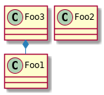

6. Layout¶
Tip
It’s true that when diagram is big (or very big) manual placement could be useful. However and unfortunatly, this is againt PlantUML concept https://forum.plantuml.net/977
Wrangling diagram elements to an exact position or layout is not what PlantUML is for.
However, there are a minimal set of layout tweak options that should be used sparingly.
Todo
this chapter is WIP
https://mrhaki.blogspot.com/2016/12/plantuml-pleasantness-customize.html
listsprites
allow_mixing skinparam pathHoverColor green
6.1. arrows¶
hidden hide unlinked
dashed arrows and boxes
https://forum.plantuml.net/4949 skinparam arrowThickness 4
a-[thickness=20]>b: some text b-[dashed,thickness=20]>d: some other text nodesep and ranksep
https://forum.plantuml.net/4181 class foo foo –> bar foo -[bold]-> bar1 foo -[dashed]-> bar2 foo -[dotted]-> bar3
top down left right
https://stackoverflow.com/questions/49945174/plantuml-component-diagram-layout-control
arrows first letter only https://mrhaki.blogspot.com/2018/06/plantuml-pleasantness-setting-arrow.html
line length https://mrhaki.blogspot.com/2016/12/plantuml-pleasantness-align-elements.html
hidden lines https://dzone.com/articles/plantuml-pleasantness-layout-elements-with-hidden
6.2. nodesep and ranksep¶

Nodesep and Ranksep¶
1 2 3 4 5 6 7 | @startuml
skinparam nodesep 10
skinparam ranksep 20
class Foo1
class Foo2
Foo3 *-- Foo1
@enduml
|
6.3. together¶
6.4. linetype¶
skinparam linetype polyline skinparam linetype ortho
ortho line style. labels removed https://forum.plantuml.net/1608/is-it-possible-to-only-use-straight-lines-in-a-class-diagram